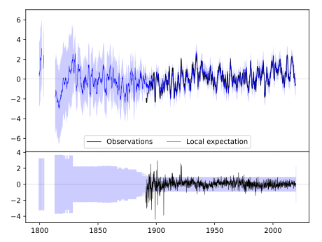
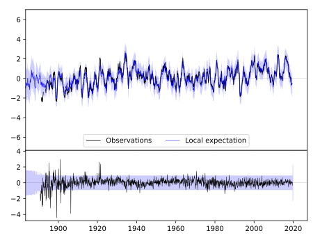
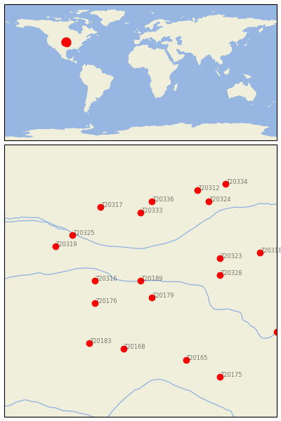

FRANKLIN [USA]


| Neighbour | Name | Country | Distance | Lon/Lat | Years |
|---|
| 720189 | FRANKLIN | USA | 0 | -99.0, 40.1 | 1890-2019 |
| 720179 | SMITH CTR | USA | 37 | -98.8, 39.8 | 1888-2019 |
| 720316 | BEAVER CITY | USA | 68 | -99.8, 40.1 | 1890-2019 |
| 720176 | NORTON 9SSE | USA | 81 | -99.8, 39.7 | 1893-2019 |
| 720328 | HEBRON | USA | 119 | -97.6, 40.2 | 1886-2019 |
| 720323 | GENEVA | USA | 126 | -97.6, 40.5 | 1886-2019 |
| 720333 | LOUP CITY | USA | 133 | -99.0, 41.3 | 1893-2019 |
| 720325 | GOTHENBURG | USA | 134 | -100.2, 40.9 | 1893-2019 |
| 720168 | HAYS 1 S | USA | 135 | -99.3, 38.9 | 1885-2019 |
| 720319 | CURTIS 3NNE | USA | 143 | -100.5, 40.7 | 1893-2019 |
| 720183 | WAKEENEY | USA | 144 | -99.9, 39.0 | 1883-2019 |
| 720317 | BROKEN BOW 2 W | USA | 156 | -99.7, 41.4 | 1893-2019 |
| 720336 | NORTH LOUP | USA | 156 | -98.8, 41.5 | 1888-2019 |
| 720165 | ELLSWORTH | USA | 170 | -98.2, 38.7 | 1866-2019 |
| 720324 | GENOA 2 W | USA | 185 | -97.8, 41.5 | 1875-2019 |
| 720318 | CRETE | USA | 186 | -96.9, 40.6 | 1882-2019 |
| 720312 | ALBION | USA | 196 | -98.0, 41.7 | 1892-2019 |
| 720175 | MCPHERSON | USA | 224 | -97.6, 38.4 | 1891-2019 |
| 720334 | MADISON | USA | 227 | -97.5, 41.8 | 1893-2019 |
| 720142 | MANHATTAN D.Burnette | USA | 228 | -96.6, 39.2 | 1828-2019 |